Pirmoji robotika trimečiui. Be ekrano, su knyga rankose. Keturmetis jau programuoja. Be ekrano, per pasakas ir žaidimą.
Paspaudi mygtuką, ir pasaka pajuda. Robotas eina per žemėlapį, vaikas pasakoja, skaičiuoja žingsnius ir mokosi pirmųjų žodžių lietuviškai ir angliškai.
Robotas, knyga ir draugai: vaikas planuoja robotui kelią, skaičiuoja iki 10, pasakoja savo istoriją ir mokosi pirmųjų žodžių dviem kalbomis.
- 30 min, kartą per savaitę
- Iki 10 vaikų, 1 robotas dviem
- Vilniuje: Tech Zity centre ir darželiuose
- 20 € už pamoką · dieną išsirenkate formoje
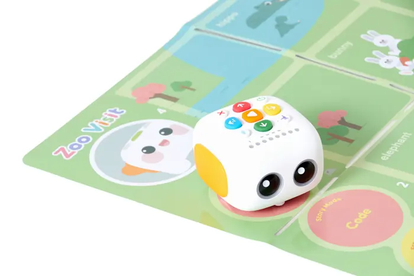
Trys klausimai, kuriuos tėvai užduoda pirmiausiaTrys tėvų klausimai
Atsakome iš karto, prieš pasakodami, kas vyksta pamokoje.
Taip. Vaikai valdo robotą tik mygtukais ant jo nugaros, planšečių pamokoje nėra. PSO: 3–4 metų vaikams ne daugiau kaip 1 valanda ekrano per dieną, o mažiau yra geriau. Matata ekrano laiko neprideda.
Šaltinis: PSO gairės vaikams iki 5 metų, 2019Gamintojas robotą skiria 3–5 metų vaikams. Skaityti nereikia: žalias mygtukas reiškia „pirmyn", robotas eina, o įrašytas balsas pasako, kas nutiko.
Iki 10 vaikų, vienas robotas dviem vaikams. Veda Robotikos akademijos mentorius, dirbantis su darželinukais. Smulkias dalis dalija tik mentorius.
Skaičiai iš robotikosakademija.lt. Matata yra nauja programa: pirmosios grupės renkamos dabar, jų rezultatus skelbsime, kai turėsime.
Ko mokomės su robotu
Robotas yra tik priežastis atsiversti knygą, suskaičiuoti žingsnius ir pasakyti žodį garsiai.
Žodžiai dviem kalbomis
Robotas prabyla lietuviškai ir angliškai: žodžius įrašome kartu su vaikais. „Liūtas. Lion. Labas. Hello."
Skaičiai žingsniais
„Kiek kartų pirmyn iki liūto? Vienas, du, trys." Skaičiuojame kūnu, robotu ir pirštais.
Meilė knygai
Kiekviena pamoka prasideda nuo paveikslėlių knygos. Vaikas rodo, kartoja, spėja, kas bus toliau.
Gyvūnai, augalai, maistas
Zoologijos sodas, ūkis, saulėgrąžos ciklas, vaisių rinkimas, mano miestas. Pasaulis ant žemėlapio.
Žaidžiame kartu
Vienas robotas dviem vaikams: laukiame eilės, tariamės, plojame draugui, kai jo robotas nuėjo teisingai.
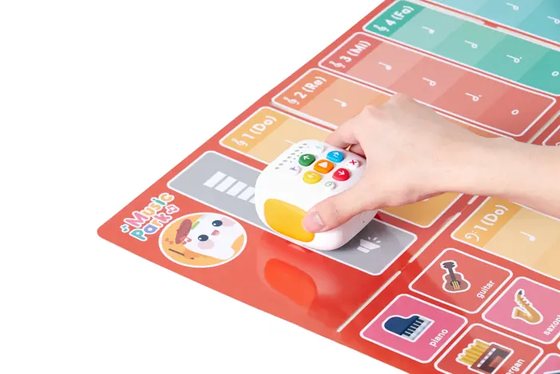
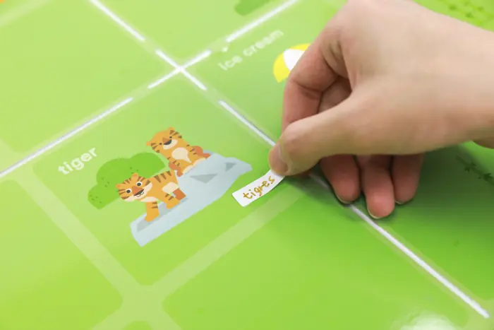
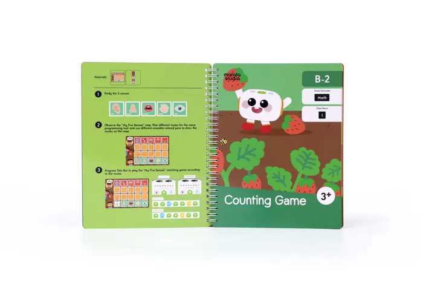
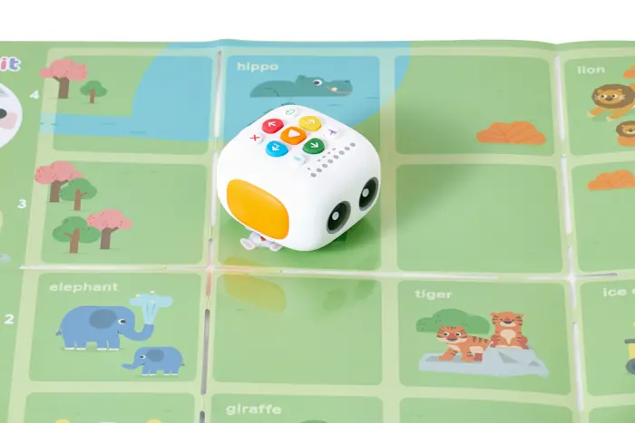
Viena pamoka: 30 minučių, minutė po minutės
Tema „Apsilankymas zoologijos sode": paveikslėlių knyga apie gyvūnus, 5 robotai, 5 žemėlapiai, iki 10 vaikų.
- 3 m.: 3–4 trumpos veiklos
- 4 m.: 2–3 ilgesnės veiklos
- 1 robotas dviem vaikams
- Mentorius prie stalo
- 0–3
Sveikinimasis ratu
Robotas pasisveikina įrašytu balsu: „Labas! Hello!" Vaikas pasako robotui savo vardą.
4 m.: ir „Hello, I am…" - 3–8
Knyga
Mentorius skaito 3–4 puslapius ir klausia: „Kas čia? Kokį garsą daro liūtas?" Vaikai rodo ir kartoja gyvūnų vardus lietuviškai ir angliškai.
4 m.: vaikai patys spėja, kas bus toliau - 8–11
„Būk robotas" kūnu
Vaikai žingsniuoja pagal rodyklių korteles ant grindų ir skaičiuoja žingsnius garsiai. Be roboto, visu kūnu.
4 m.: 4–5 žingsnių seka - 11–21
Robotas ant žemėlapio, poromis
Robotą dedame ant „įėjimo". Balsas duoda užduotį, pora spaudžia mygtukus, skaičiuoja „1, 2, 3" ir taiso klaidą, jei robotas nuėjo ne ten.
4 m.: kelias per 2 gyvūnus, gal su „Kartoti" - 21–26
Įrašas
Kiekviena pora įrašo į robotą vieną sakinį: „Liūtas labai didelis" arba „The lion says roar". Vaikas kalba į mikrofoną ir girdi save.
4 m.: dviejų sakinių istorija - 26–29
Parodyk draugams
Dvi ar trys poros paleidžia savo robotą, kiti ploja. Vaikas papasakoja, kur robotas nuėjo.
4 m.: atsako „kodėl pasirinkai tą kelią?" - 29–30
Atsisveikinimas ir namų kortelė
Lipdukas vaikui ir trumpa kortelė tėvams: apie ką šiandien skaitėme ir ką galima paklausti namie.
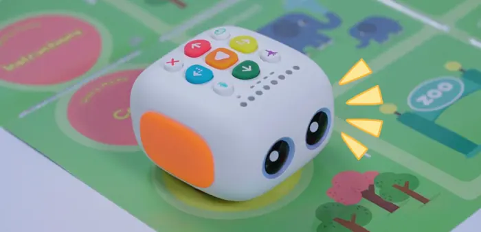
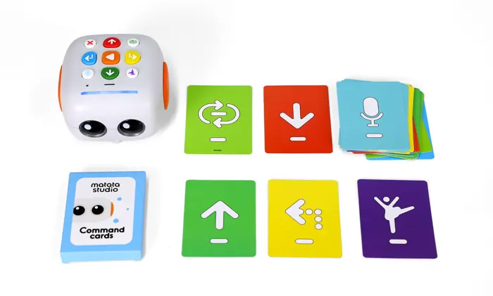
Ko tikimės po 1 pamokos, 3 ir 6 mėnesiųKo išmoks
Kartą per savaitę: 3 mėnesiai yra apie 12 pamokų, 6 mėnesiai apie 24. Rodomi tikslai programai „Matata Mažyliams" (3 m.)„Matata Robotics" (4 m.).
- Paspaudžia mygtuką ir robotas pajuda. Supranta, kad tai jo komanda.
- 2–3 gyvūnai lietuviškai ir angliškai: lion, bear.
- Suskaičiuoja 3 žingsnius garsiai, kol robotas eina.
- Išgirsta savo balsą iš roboto. Dauguma nori dar kartą.
- Žino 6 mygtukus, sudaro 2–4 komandų seką, ištrina klaidą.
- Skaičiuoja iki 5 ir sieja taškus su skaičiais.
- ~20 žodžių temomis (gyvūnai, maistas, vietos) ir ~10 angliškų: sveikinimasis, spalvos, skaičiai iki 5. Įrašo 1 sakinį.
- 12 knygų perskaityta kartu: 5 pojūčiai, vaisiai ir daržovės, gyvūnai. Atpažįsta pirmą savo vardo raidę.
- Dirba poroje ir laukia eilės.
- 5–8 komandų seka iki tikslo be pagalbos.
- Skaičiuoja iki 10, sako „daugiau" ir „mažiau".
- 3 sakinių istorija apie robotą lietuviškai, ~20 angliškų žodžių ir 2–3 frazės.
- 24 knygos, gyvūnų ir augalų gyvenimo ciklai, mano miestas. Seka istoriją iš paveikslėlių.
- Padeda draugui, kai jo robotas nuėjo ne ten.
- Suplanuoja 4–5 žingsnių kelią iki gyvūno ir pataiso, jei robotas nuėjo ne ten.
- Pasisveikina angliškai: „Hello, I am…"
- Skaičiuoja žingsnius iki 5 ir atsako „kiek kartų pirmyn?"
- Įrašo 2 sakinius savo balsu ir paleidžia robotą draugams.
- 4–8 žingsnių seka ir pirmas ciklas „Kartoti".
- Skaičiuoja iki 10, lygina, kuris kelias trumpesnis.
- ~20 žodžių temomis ir ~10 angliškų su 2 frazėmis: „Go forward", „Hello, I am…". Įrašo trumpą istoriją.
- 12 knygų perskaityta kartu: bendruomenės pagalbininkai, saulės sistema, bitės. Atpažįsta 5 raides ant kortelių.
- Pora dirba savarankiškai, mentorius tik stebi.
- Ciklai ir 2 tikslai viename kelyje: „per dramblį iki liūto".
- Randa dėsningumą ir lygina: daugiau, mažiau, greičiau.
- 3 dalių istorija (pradžia, kelias, pabaiga), ~20 angliškų žodžių ir 2–3 frazės.
- 24 knygos, gyvenimo ciklai, miestas, kosmosas. Atpažįsta 5–10 raidžių.
- Dalijasi vaidmenimis ir paaiškina draugui, kodėl pasirinko tą kelią.
Tai programos tikslai iš 42 lietuviškų veiklų kortelių, ne garantija ir ne tyrimo rezultatas. Pirmąją grupę matuosime ir skaičius atnaujinsime. Vaikas neišmoks skaityti ar kalbėti angliškai per pusmetį: tai pasiruošimas skaityti ir pirmieji žodžiai.
Kiek kainuoja
20 € už pamoką
4 pamokos per mėnesį, tai yra 80 € per mėnesį. 30 min · kartą per savaitę · iki 10 vaikų · 1 robotas dviem vaikams.
- Visa įranga pamokoje: robotas, pasakų žemėlapiai, komandų kortelės. Nieko pirkti nereikia.
- Nauja paveikslėlių knyga kiekvieną savaitę ir namų kortelė tėvams po pamokos.
- Vilniuje: Tech Zity centre ir darželiuose. Dieną išsirenkate formoje.
Kodėl brangiau už minutę nei įprastas būrelis?
Grupė maža, o robotas tenka dviem vaikams. Kiekvienas vaikas spaudžia mygtukus pats, o ne žiūri, kaip spaudžia kiti. 30 minučių, nes tiek trimetis ir keturmetis išlaiko dėmesį.
Užsirašyti į sąrašąPrieš mokėdami gausite visą informaciją ir galėsite apsigalvoti. Užsirašymas į sąrašą neįpareigoja.
Užsirašykite į laukiančiųjų sąrašą
Pirmieji sužinosite tvarkaraštį savo darželyje ar Robotikos akademijos centre.
- Įsipareigojimo nėra. Laiškas, kai atsidaro grupė, ir tiek.
- Vaiko vardo neprašome. Tik amžius, kad pasiūlytume tinkamą grupę.
- Užtrunka apie minutę.
Dažniausi klausimai
Ar 3 metų vaikas iš viso gali programuoti?
Taip, mūsų prasme: spaudžia spalvotus mygtukus, ir robotas eina. Skaityti nereikia. Gamintojas robotą skiria 3–5 metų vaikams.
Ar tikrai be ekrano?
Taip. Vaikai valdo robotą tik mygtukais ant jo nugaros. Planšetės ir telefonai pamokoje nenaudojami.
Kuo tai skiriasi nuo Robotikos akademijos būrelio?
Čia nekonstruojame. Daugiau pasakų, knygų ir žodžių. Trumpiau: 30 min vietoj 60, nes trimečio dėmesys trumpesnis.
Kodėl brangiau už minutę nei įprastas būrelis?
Grupė maža, o robotas tenka dviem vaikams. Kiekvienas vaikas spaudžia mygtukus pats, o ne žiūri. Kiekvieną savaitę nauja knyga ir namų kortelė tėvams.
O jei vaikui nusibos arba nepatiks?
Kiekvieną savaitę nauja tema ir nauja knyga: gyvūnai, augalai, maistas, miestas, kosmosas. Robotas dar piešia, šoka ir kalba vaiko balsu. Prieš mokėdami gausite visą informaciją ir galėsite apsigalvoti.
Ar vaikas išmoks anglų kalbą ir skaityti?
Išmoks pirmuosius angliškus žodžius ir frazes per žaidimą: tai pradžia, ne kalbos kursas. Skaityti per kelis mėnesius neišmoks: ugdome meilę knygai, klausymąsi, pasakojimą ir pažintį su raidėmis.
Kur ir kada vyksta?
Vilniuje: Tech Zity centre ir darželiuose. Dieną ir vietą išsirenkate formoje, o kai susirinks grupė, parašysime tikslų laiką.
Kas atsitiks užsiregistravus į sąrašą?
Gausite laišką, kai atsidarys grupė jūsų darželyje ar centre. Įsipareigojimo nėra: tada ir nuspręsite.
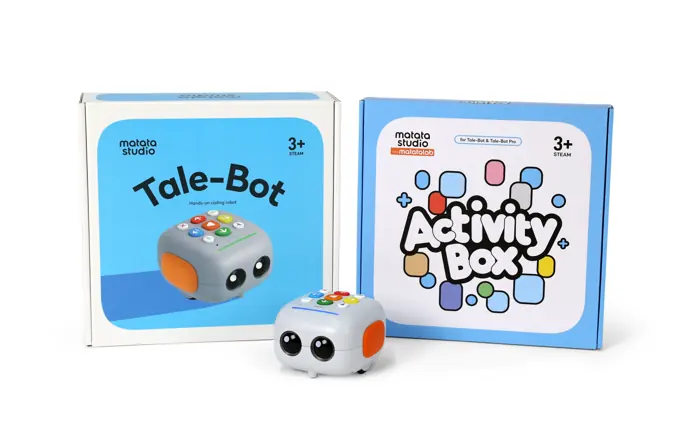
Norite tęsti namuose?
Šeimos gali turėti robotą ir namuose: rinkinyje robotas, pasakų žemėlapiai ir trumpi 2–3 min video, kuriuos žiūri tėvai, o ne vaikas, kad žinotų, kaip pradėti žaidimą. Vaikas žaidžia be ekrano.
Namų rinkinį siūlysime kartu su pamokomis grupėje, ne vietoj jų. Robotas namuose veikia geriausiai, kai vaikas jau žino žaidimą iš pamokos, o jūs turite kortelę, ką klausti.
Domina rinkinys namamsSkaidrumas: robotus gamina MatataStudio. Jų oficialus platintojas Lietuvoje susijęs su Robotikos akademijos bendrasavininkio Kristijono Vasiliausko šeima. Robotus pasirinkome, nes jie veikia be ekrano ir tinka 3–4 metų vaikams. Namų rinkinio kaina dar nenustatyta.
Kiekvieną savaitę nauja tema ir nauja knyga
42 veiklos lietuviškai, 18 dvipusių žemėlapių. Robotas dar piešia, šoka ir kalba vaiko balsu, tad nuobodu nebūna.
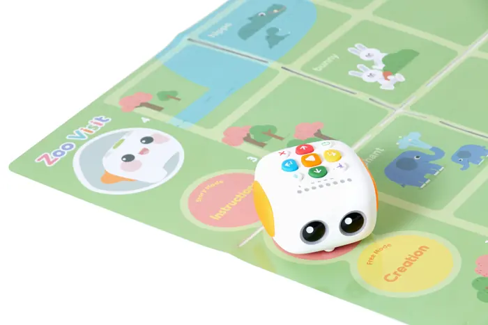
Gyvūnai
Zoologijos sodas, ūkis, varlės gyvenimo ciklas, bitės.
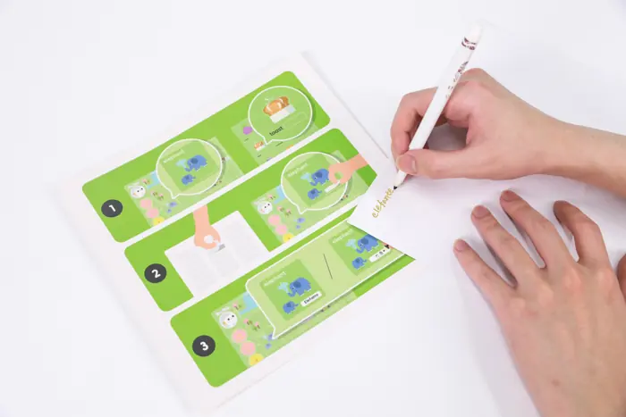
Augalai
Saulėgrąžos ciklas, morkų ir moliūgų rinkimas.
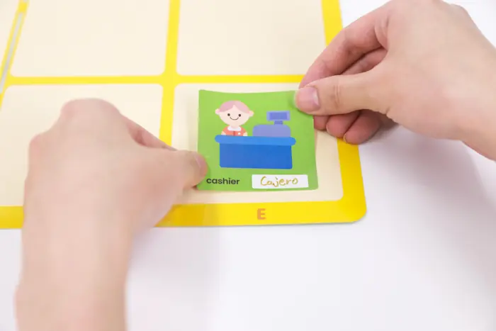
Sveikas maistas
Vaisių rinkimas, daržovių iššūkis, maisto parduotuvė.
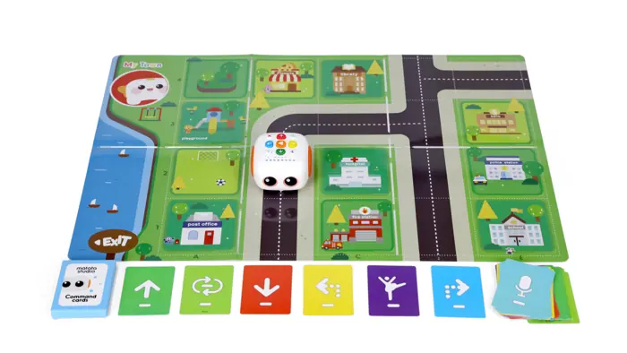
Pasaulis
Mano miestas, pagalbininkai, saulės sistema, 5 pojūčiai.
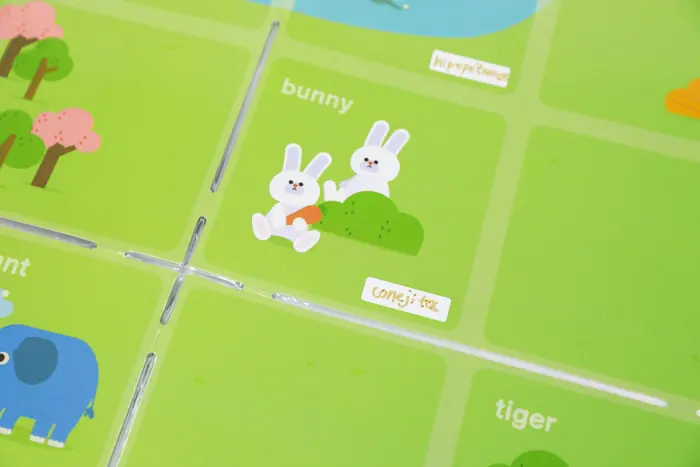
Kalbos ir pasakos
Malonu susipažinti, lobio paieška, mėgstamiausia pasakų knyga.
Kaip tai veikia kitur
Tokiais robotais vaikai mokosi darželiuose Singapūre ir, gamintojo duomenimis, daugiau nei 60 šalių. Singapūre vaikai su juo mokosi net kinų kalbos. Lietuvoje programą kuriame lietuviškai.
- Singapūras: darželis, pasakos kinų kalba
- Tarptautinės varžybos MWRC, finalas Pekine 2026
Video įkeliamas iš YouTube tik paspaudus mygtuką. Iki tol jokių „YouTube" slapukų.
Ramu ir paprasta
Veda Robotikos akademijos mentoriai, dirbantys su darželinukais. Taisyklės, kurių laikomės kiekvienoje pamokoje:
- Kiekvienas vaikas mygtukus spaudžia pats. Mentorius niekada nespaudžia už vaiką.
- Klaidą vadiname „bandymu". Robotas nuėjo ne ten? Puiku, bandome dar.
- Kalbiname, o ne kalbame už vaiką: „Kas čia? Kas bus toliau?"
- Priedus su smulkiomis dalimis dalija tik mentorius. Telefonai kišenėje.
- Vaikų veidų nefilmuojame ir nefotografuojame be raštiško jūsų sutikimo. Čia matote tik robotus ir rankas.
- Drovus ar dar gerai nekalba? Tiks. Vaikas gali tik spausti mygtukus ir klausytis.
- Pirmoje pamokoje tėvai gali pabūti pirmąsias 5 minutes, kol vaikas apsipranta.
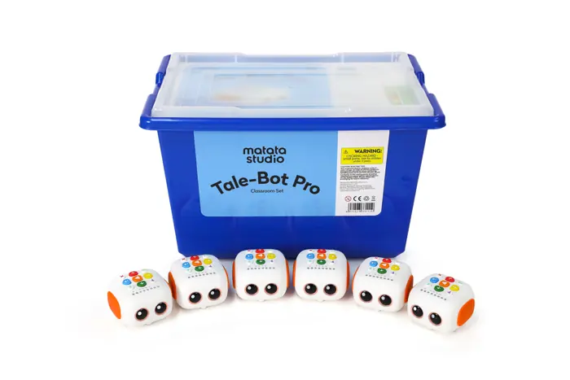